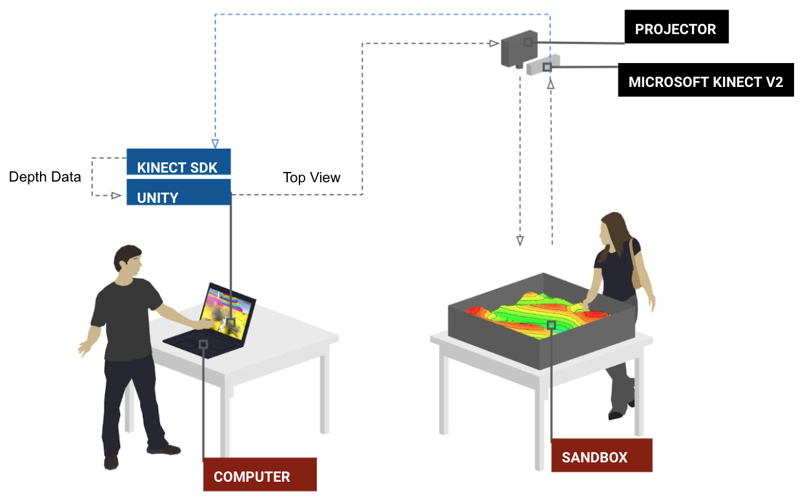
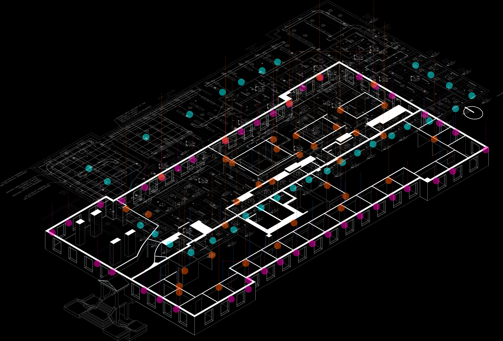
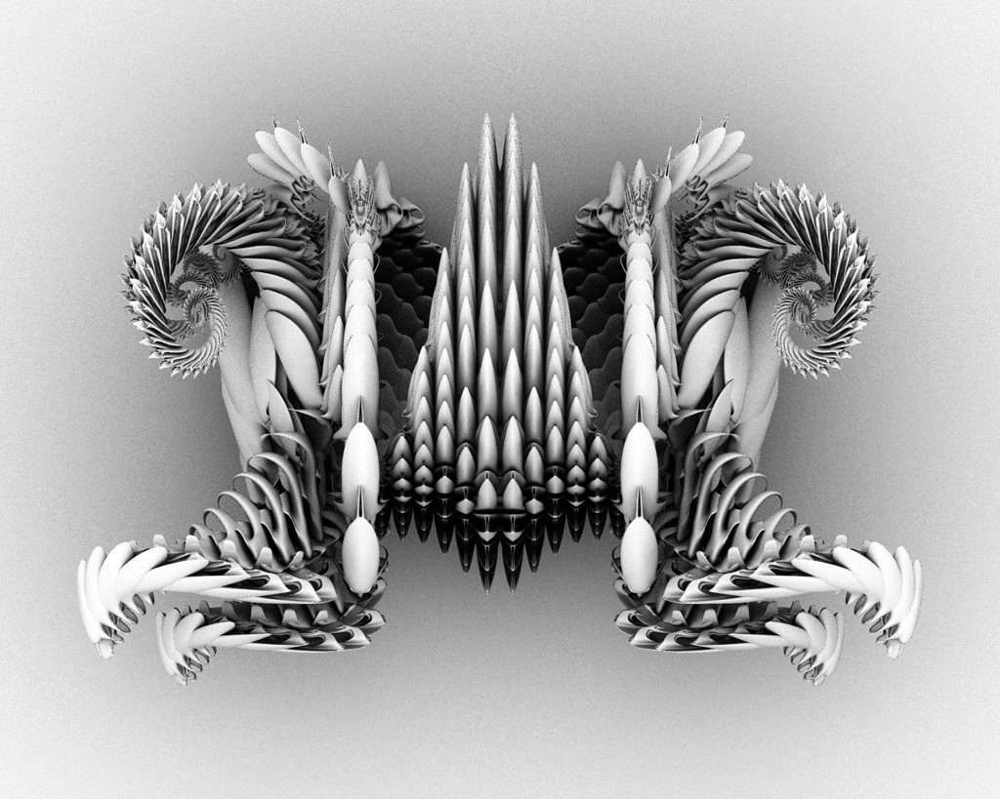
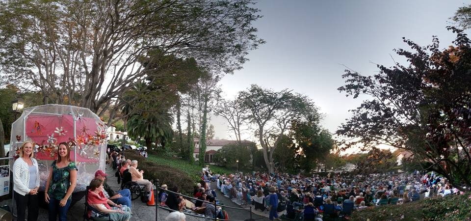

Alan
holds a Ph.D. in Computer Engineering from the University of Virginia and a Bachelor of Architecture from the University of Southern California. His doctoral dissertation, titled "Integrating Contextual Data for Real-World Insights in Living Labs," delves into the convergence of artificial intelligence, digital twins, sensors, and the built environment.

Augmented Reality Sandbox
Collaboration with Nicole Chheng, Xun Liu, Nidhi Manu
In response to the growing trend of video game engagement, exacerbated by the pandemic, our collaborative project explores innovative solutions to make gaming more accessible. Drawing inspiration from Tangible User Interfaces (TUIs), particularly the groundbreaking work of Ishii and Ullmer in 1997, we delve into the realm of tangible topography. Examining projects like "Sandscape," which employs sand as a medium for modeling topography, we explore the convergence of physical and virtual interactions.
Living Link Lab
"The Living Link Lab is an NSF-Funded testbed at the University of Virginia (UVA) Cyber-Physical Systems laboratory (Link Lab) for enabling long-term in-situ studies of occupant behavior, cognition, and interactions in a large collaborative environment while monitoring the changes in environmental factors (e.g., changes in temperature, air quality, and humidity) and energy consumption. With occupant-based wearables, automated and interactive mobile robots, and comprehensive building and environment sensors, the testbed will capture several dimensions of variability in human-building interactions that have not been captured in prior research. Additionally, through a developed user interface (UI) system, the consented participants in the Link Lab can access environmental and personal data where they can visually track the changes in their surrounding environment as well as monitor their emotional well-being."
Functionless
The Functionless workshop focus on contemporary discussions of formal exploration in architecture and art, emphasizing design territories, material intelligence, and precision assemblies using Autodesk MAYA. The goal is to push the boundaries of architectural expression, fostering innovation and a deeper understanding of geometric variations in a contemporary context.
Garball
Collaboration with the Palos Verdes Art Center, Palos Verdes Library, and Palos Verdes Land Conservancy
Alan designed a moving art piece called the "Garball," a six-foot diameter ball made of PVC pipe filled with plastic water bottles. The Garball travels to different community locations, generating interest for Edward Hume's "Garbology". Katherine Gould, director of the Palos Verdes Library District, commends the initiative for fostering community engagement and sparking conversations based on shared reading experiences.
Artificial Reefs
Invitation from Topotheque Design Studio
Collaboration with Iason Pantazis, Evangelos Pantazis

"Yfalos is a generative design and digital fabrication workshop which examines how circular design strategies combined with computational methods can be used to provide solutions in problems raised by local communities within the time constraints of a cyber-physical workshop.The workshop focuses on how we can increase the biodiversity of marine life in coastal areas by creating bio-inspired habitats. The participants address this problem by exploring the design and construction of an artificial reef structure.The workshop runs concurrently through:1)a Virtual design platform where the designers-participants investigate different geometries of the base modules along with rules for aggregating them as well as the process of constructing them. 2) a Physical fabrication laboratory where the makers-participants produce construction samples and prototypes of the base geometries and communicate the various fabrication constraints to the designers in order to optimize the design in real time."
Yfalos Workshop Demo-Digital Futures 2020 from topotheque on Vimeo.